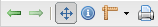
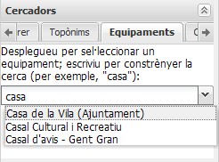
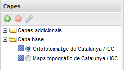
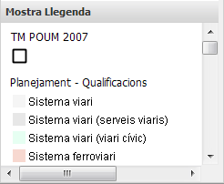
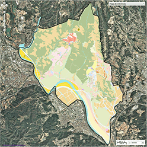
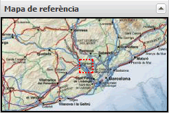

Introducció
GeoExplorer permet l'exploració de la informació cartogràfica de l’Observatori Limnològic Pirenaic del Canvi Global mitjançant la consulta d'una sèrie de mapes predefinits així com de la documentació associada. El visor de mapes us permetrà interactuar amb la cartografia, descarregar vistes, fer cerques, consultar elements, i manipular la composició de capes.
Com navegar
Barra d’eines

Ens permet dur a terme accions sobre el mapa:
 Vista anterior:
Vista anterior:- Torna a l'enquadrament anterior.
 Vista següent:
Vista següent:- Recupera l'enquadrament següent.
 Desplaça mapa:
Desplaça mapa:- Activa el desplaçament del mapa amb el ratolí.
 Consulta elements:
Consulta elements:- En fer clic sobre un punt, mostra la informació dels elements representats al mapa.
 Mesura:
Mesura:- Permet dibuixar una línia o polígon sobre el mapa per mesurar la seva longitud o àrea, respectivament.
 Imprimeix mapa:
Imprimeix mapa:- Genera un document per a la seva descàrrega o impresió en diferents formats i resolucions.
Pestanyes de cercadors

Ens permet situar el lloc que busquem al centre del mapa. Hi ha els següents cercadors:
- Carrerer:
- Al carrerer de l'Ajuntament, mitjançant carrer i número.
- Topònim:
- A la base toponímica de l'Ajuntament. Escriviu un text per filtrar, o obriu el desplegable per mostrar la llista completa.
- Equipaments:
- A l'inventari d'equipaments de l'Ajuntament. Escriviu un text per filtrar, o obriu el desplegable per mostrar la llista completa.
- Cadastre:
- Als serveis web de l'Oficina Virtual de Catastro mitjançant la referència cadastral.
- UTM:
- Desplaça el mapa a una localització especificada mitjançant un parell de coordenades UTM (fus 31N, datum ED50).
- Google:
- Mitjançant el servei de geocodificació de Google.
Arbre de capes

Mostra les capes de cartografia de base i capes superposades. Ens permet afegir o treure capes de l'arbre, pròpies o alienes, activar-les o desactivar-les, canviar-ne l'ordre de visualizació i consultar les seves propietats.
Panell de Llegenda

Ens dóna la informació sobre la simbologia utilitzada en les capes actives.
Mapa principal

Ens mostra la cartografia amb les capes actives en cada moment.
Mapa de referència

Ens situa l'àmbit visible al mapa principal en un context cartogràfic més ampli.